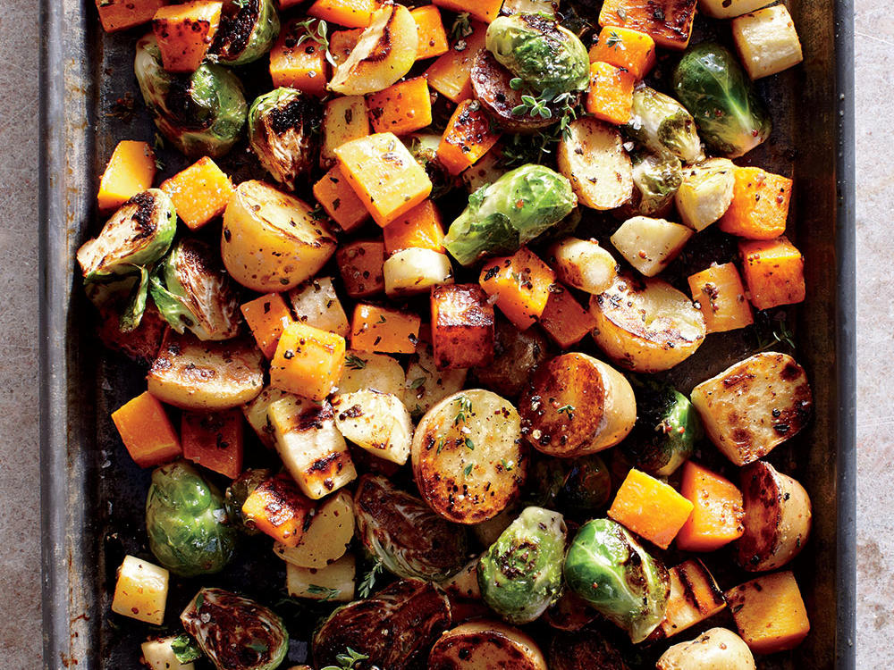

Pan Baked Mixed Veggies

Baking pan filled with oven-baked seasoned veggies
A fantastic side dish made from delicious pan baked veggies
Ingredients
- Cauliflower
- Broccoli
- Squash
- Zucchini
- Carrots
- Ground Pepper
- Salt
- Olive Oil
Steps
- Heat oven to 400 degrees fahrenheit
- Clean the area and prepare a cutting board
- Cut all the vegetables into bite sized pieces.
- Place cut veggies onto a baking pan
- Drizzle a generous amount of olive oil on all veggies.
- Add salt and pepper or other spices (according to personal preference)
- Cook in oven for 25 minutes* or until veggies are cooked crispy.
Check every 5-10 minutes